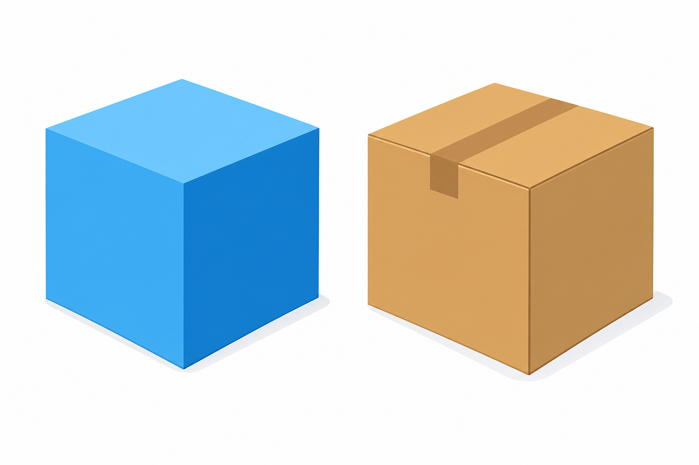

1
kula
куля

📘 Co to jest? Що це?
Zbiór punktów w przestrzeni w odległości ≤ r od środka (pełna bryła).
Множина точок у просторі на відстані ≤ r від центра (повне тіло).
⭐ Zapamiętaj Запам'ятай
piłka
Перевір на прикладі: piłka. Порівняй з означенням і скажи своїми словами.
⚠ Nie pomyl Не плутай
- pełna piłka≠ sfera
- sfera = powierzchnia
✅ Przykłady Приклади
- piłka — to kula
- globus ≈ kula
- środek O, promień r
- kula ≠ sfera
- która bryła to kula?